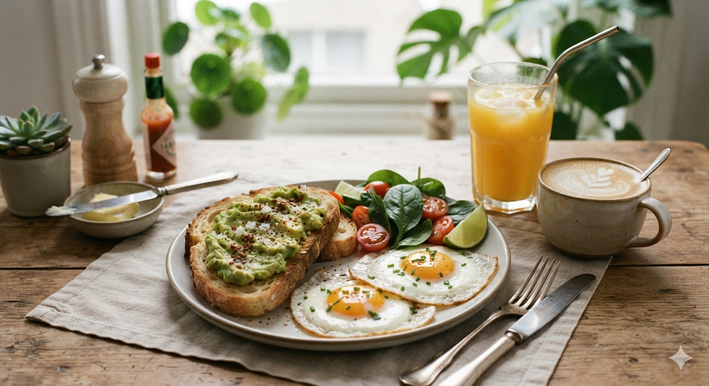

Toast Bread And Eggs Recipe (with fanta to step down)

Description
This toast bread and eggs recipe is a quick, classic breakfast that perfectly balances crispy textures with soft, savory flavors. By toasting the bread in a pan with a little butter, you get a beautiful golden-brown crust that stays crunchy on the outside while remaining soft on the inside.
Ingredients
- 4 Bread slices : Butter or margarine: 2 tablespoonsMilk: 2 tablespoonsSalt: A tiny pinchBlack pepper: A tiny pinch (optional)Drink of choice: Sweet tea, coffee, or fresh fruit juice
- Eggs: 2 large eggs
- Butter or margarine: 2 tablespoons
- Milk: 2 tablespoons
- Salt: A tiny pinch
- Black pepper: A tiny pinch (optional)
- A bottle of Fanta
Steps
- Crack the two eggs into a clean bowl.
-
- Add the milk, a tiny pinch of salt, and pepper.
- Beat the eggs well with a fork until the mixture is smooth and light.
- Spread a thin layer of butter on both sides of each bread slice.
- Place a frying pan on medium heat.
- Let it get warm.Put the bread slices in the pan.
- Toast each side for 2 minutes until it turns golden brown and crisp.
- Take the bread out and set it on a plate.
- Add a tiny bit of butter or oil to the same pan on low heat.
- Pour in your beaten egg mixture.
- Stir gently if you want scrambled eggs, or leave it flat if you prefer a solid fried egg.
- Cook for 2 minutes until fully done.
- Put your warm toast and cooked eggs on a plate.
- Pour a chilled glass of Fanta to step it down.
Index page